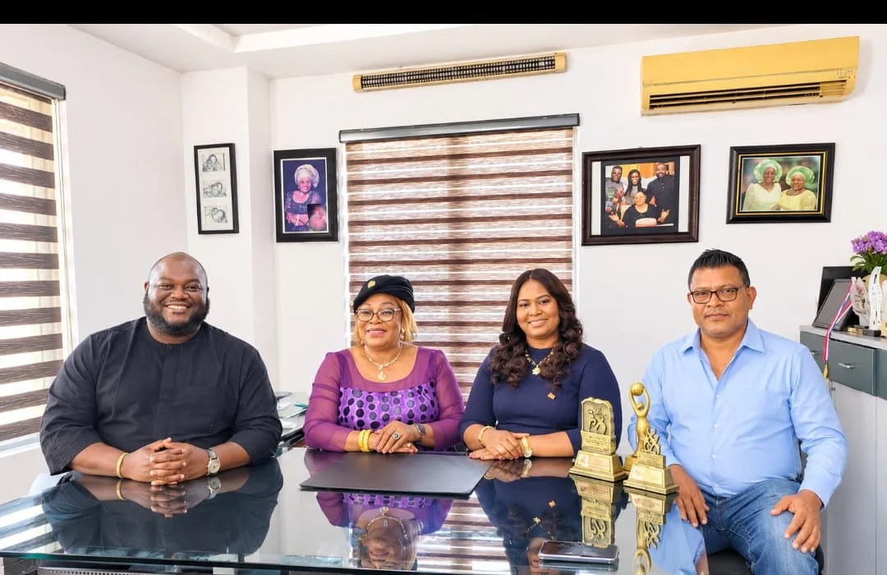

WIMAFRICA seeks greater economic power for African women

WIMAFRICA seeks greater economic power for African women
Women in Management Africa will hold its first African edition of the Women in Management global economic forum in Lagos on 10–11 November 2026. The event, at the Federal Palace Hotel, will take place under the theme “The Power Shift: Women Driving Africa’s Global Economic Influence.” Organisers say it will focus on improving women’s access to finance, markets and economic decision-making.
WIMAFRICA Chairperson Dr Ngozi Oyewole said the aim was to help women move beyond participating in economic activity and gain greater influence over business decisions, trade and resource allocation. She said African women already contribute to manufacturing, agriculture, trade and entrepreneurship, but face barriers including limited capital, infrastructure gaps, cultural restrictions and difficulties accessing land. The forum will also examine opportunities linked to the African Continental Free Trade Area, including local manufacturing, backward integration and African supply chains.
Oyewole said businesses can struggle to fulfil confirmed orders because they lack working capital to buy materials, pay staff and cover production costs before customers pay. She called on financial institutions to design products that reflect the needs of women-owned businesses, and urged government agencies and companies to widen procurement access for qualified firms and pay promptly for completed contracts. She also called for practical guidance on AfCFTA documentation and rules of origin, alongside better roads and electricity to reduce costs and losses for rural businesses, particularly those handling perishable goods.
Women in Management founder Dr Sulochana Segera said bringing the international platform to Africa was intended to connect African women with global business, trade and investment opportunities. Founded in Sri Lanka 16 years ago, the organisation has a network spanning 29 countries, she said. The partnership with Oyewole will also use WIM’s Top 50 recognition platform to highlight African women’s contributions. Segera said the Lagos gathering was intended to support business partnerships and longer-term economic cooperation, as well as recognition.
Source: Punch